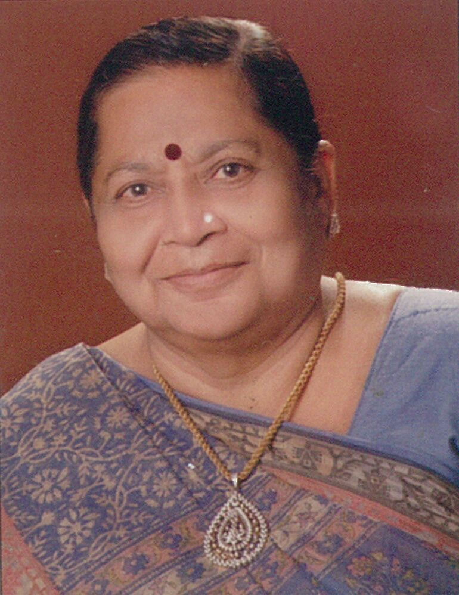
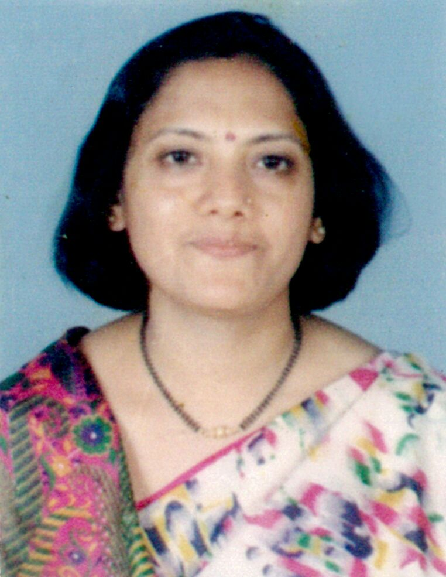

અમારી ઓળખ
સંકલ્પ --------- સાહસ -------- કાર્યસિધ્ધી -------
શ્રી સુરત ઘોઘારી વીસાશ્રીમાળી જૈન મહિલા મંડળ -------
આ નામ અમ ઘોઘારી
બહેનોની ઓળખ છે। આ મંડળ એવી બહેનોનું છે જેમને જીવન માં કઈક નવું કરવું છે, નવા સર્જનાત્મક કાર્ય માટે સંકલ્પ કરો ----તેને પ્રાપ્ત કરવા સાહસ કરો -મહેનત કરો -------અને કાર્યસિધ્ધી -સફળતાને વરો.
1997 માં સ્થાપિત થયેલું અમારું આ મંડળ એવી બહેનોનું સંગઠન છે જે પોતાના બહુવિધ કાર્યો થકી કુટુંબને
,સમાજને અને રાષ્ટ્ર ને ઉપયોગી થવા તત્પર છે। સહુને સાથે રાખી ચાલવું એજ અમારો મંત્ર છે.મંડળ માં સહુ સમાન
સ્તર પર રહે એજ અમારો ધ્યેય છે.એક બીજાની હુંફ મેળવે ,સાથ સહકાર મેળવે ,એક બીજાના વિચારોની આપ લે થાય અને રચનાત્મક
પ્રવૃત્તિ તરફ બહેનો વળે ---પોતાના જ્ઞાન નો પરીઘ વધારે,સુપર સ્પીડ માં દોડતી દુનિયા સાથે કદમ થી કદમ મેળવી શકે. પોતાના કુટુંબ માં સન્માનિત
સ્થાન પ્રાપ્ત
કરે પોતાની એક આગવી ઓળખ બનાવે .આછે અમારી ઓળખ
.
શ્રી ઘોઘારી વીસાશ્રીમાળી જૈન મહિલા મંડળ ફેડરેશન----
ફેડરેશન ના નેજા હેઠળ સમગ્ર ભારત ભરમાં અનેક મંડળો સ્થપાયાં છે જે એક બીજા સાથે જોડાયેલા છે. જે સંગઠન શક્તિ તથા મૈત્રી સદભાવના નું અમુલ્ય પ્રતિક છે .અમોને ગર્વ છે અમે આ ગ્રેટ ફેડરેશન નું અભિન્ન અંગ છીએ. મહિલા મંડળ પરિવારમાં દરેક બહેનોને આગળ વધવા માટે જગ્યા મળે છે ,પીઠબળ મળે છે ,માર્ગદર્શન મળે છે ,પ્રેરણા મળે છે, સમાજ ની પ્રગતિ માટે અમે સહુ બહેનો કાર્યરત રહીશું. પ્રગતિશીલ સમાજ ના એક મુખ્ય અંગ એવા આ મંડળ નું નામ સદાય સ્વ કાર્યો થકી ઝગમગતું રહે છે અને રહેશે ----- આ છે અમારી ઓળખ _______
મંડળ નો મુખ્ય
ઉદ્દેશ
1. મૈત્રી -સદભાવના -બહેનોનું મિત્ર વર્તુળ વધારવું
2. સંગઠન -એકતા -ઘોઘારી બહેનો નું ઐક્ય સાધવું
3. સ્ટેજ -બહેનો માટે એક પ્લેટફોર્મ બનાવવું
4. બહેનોનો આત્મવિશ્વાસ વધારવો
5. બહેનોને સર્જનાત્મક પ્રવૃત્તિ માટે પ્રેરિત કરવી
મમંડળનો ધ્યેય
1. બહેનો જ્ઞાન નો પરિઘ મોટો કરે
2. આત્મવિશ્વાસ બુલંદ કરે અને પ્રવૃત્તિમય બને
3. ટાઇમ મેનેજમેન્ટ માં નિપુણ બને સમય નો પૂરો સદઉપયોગ કરે
4. થોટ મેનેજમેન્ટ શીખે અને વિચારોની નવી દિશા કેળવે
5. સમાજ ઉત્થાન માટે આંતરિક શક્તિ જગાવે
મંડળ ની કાર્યસિદ્ધિ
1. બહેનોનું એક સુદ્રઢ સંગઠન બન્યું
2. બહેનો વધારેને વધારે પ્રવૃત્તિમય બની
3. બહેનો સમય નો સંપુર્ણ ઉપયોગ કરવા લાગી
4. બહેનોએ પોતાની જાતને ઓળખી તેને પ્રેમ કરતા શીખી
5. સ્વ -શક્તિ થી પરિચિત થઇ .આત્મગૌરવ મેળવ્યું
6. મૈત્રીપુર્ણ વ્યવહાર અને રચનાત્મક કાર્યો તરફનો દ્રષ્ટિકોણ મળ્યો
પ્રોજેક્ટ્સ
સમાજ લેવલે કરેલા પ્રોજેક્ટ્સ
1. ઘોઘારી આઇડોલ
જેમાં 25 વર્ષ નીચેના અને 25 વર્ષ ઉપરના એમ 2 ગ્રુપ માં ટોટલ 32 સ્પર્ધકોએ ભાગ લીધો અને કાર્યક્રમ ખુબજ સફળ રહ્યો. કાર્યક્રમ નું સંપૂર્ણ સંચાલન રીટાબેન પારેખે કર્યું હતું.
2. એજ્યુકેશનલ ટોક શો
જે ડોક્ટર ,પ્રિન્સીપાલ તથા સાઈકોલોજીસ્ટ સાથે કરવામાં આવ્યો હતો.જેના સુત્રધાર રીટાબેન પારેખ હતા.
મંડળ ના પરિવાર સાથે કરેલા પ્રોજેક્ટ્સ
1. ટેલેન્ટ નાઈટ
2. સાંસ્કૃતિક કાર્યક્રમ
3. હેન્ડીકેપ્ટ લોકો સાથે મુઝીકલ શો
4. ડાન્સ ઘોઘારી ડાન્સ
5. નાટક
6. પિક્ચર, વગેરે વગેરે
યાત્રા પ્રવાસ
1. નાગેશ્વર પારસનાથ
2. ઉવસ્સગ્રમ પારસનાથ
3. કુલ્પાક્જી
4. કચ્છ ભદ્રેશ્વર
5. જેશલમેર
6. સિદ્ધાચલગીરી, વગેરે વગેરે
શ્રી સુરત ઘોઘારી વીસાશ્રીમાળી જૈન મહિલા મંડળની
સક્ષમ કારોબારી સમિતિ

પ્રમુખ: ઇન્દીરાબેન સુરેશભાઈ ચાવાળા

માનદમંત્રી: રીટાબેન સંજયભાઈ
પારેખ

ઉપપ્રમુખ
1. હીરાબેન ચંપકભાઈ ચાવાળા
2. જસુબેન ધીરુભાઈ દુધવાળા
3. નયનાબેન સુબોધભાઈ સંઘવી
સહમંત્રી
1. વિલાસબેન કાન્તીભાઈ
2. રાગીણીબેન રમેશભાઈ
ખજાનચી
1. જ્યોતિબેન દિલીપભાઈ
2. રસીલાબેન પ્રમોદભાઈ
કમિટી બહેનો
1. નયનાબેન શરદભાઈ
2. સુભદ્રાબેન ચંદુભાઈ
3. માલતીબેન સુરેશભાઈ
4. ભાવનાબેન દિનેશભાઈ
5. પ્રવિણાબેન ભરતભાઈ
6. રમીલાબેન અરુણભાઈ
7. સરોજબેન ધીરુભાઈ દોશી
8. ચંપાબેન હરિભાઈ શાહ